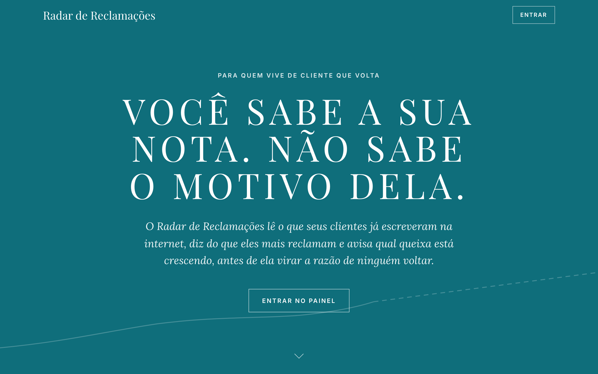
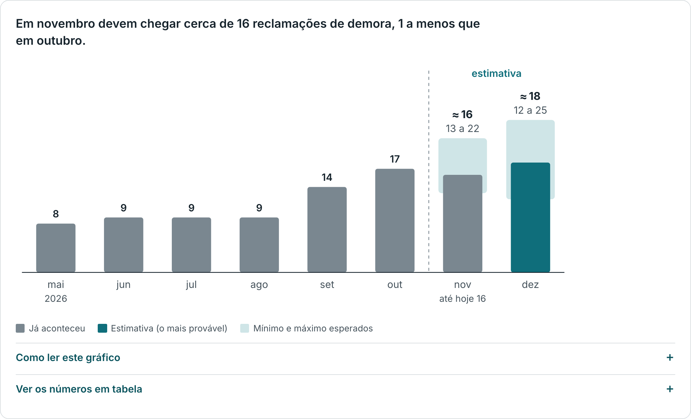
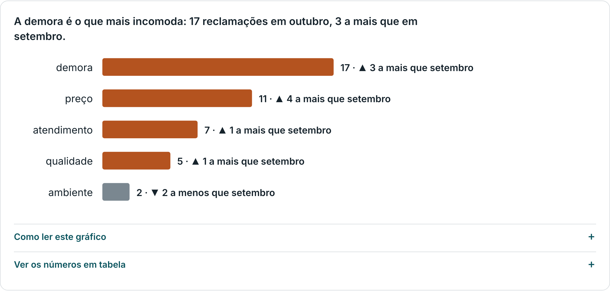
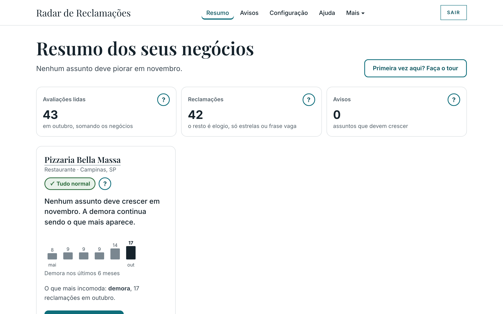
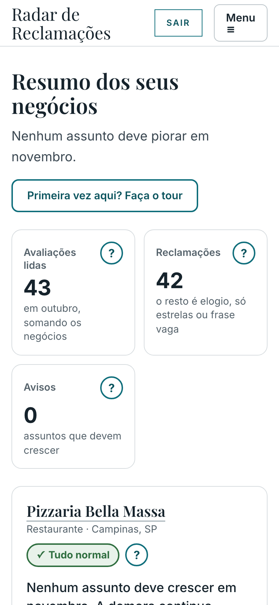
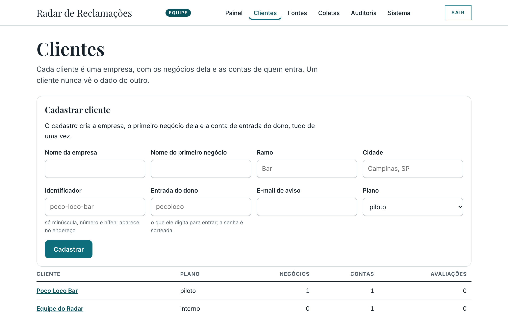

Projeto Integrador VI
Por que os clientes do seu negócio reclamam, e qual queixa vai crescer.


Equipe
Gabriel Lopes Londe Rodrigues · Matheus Rocafa Moraes · Nicolas Marques Linares
Orientação
Profa. Sílvia C. de Matos Soares
PUC-Campinas
Engenharia de Software · 25/11/2026
Sumário
o problema
O Poco Loco Bar, ao lado da PUC, tem 357 avaliações no Google. Ninguém lê todas para saber se o problema é demora, preço ou atendimento.

o objetivo
Cada avaliação vai para um de cinco assuntos: atendimento, demora, preço, qualidade e ambiente.
Estimativa do mês com mínimo e máximo, e aviso quando um assunto deve subir.
Cada número aparece ao lado do chute mais simples. Onde não ganha, a tela diz.
como funciona
Ninguém precisa ler as avaliações uma a uma: o sistema faz o caminho inteiro sozinho.
Arquivo exportado da plataforma.
Nome, telefone e documento saem antes de gravar.
PostgreSQL, separado por cliente.
A IA diz o assunto de cada avaliação.
Reclamações por assunto, mês a mês.
O próximo mês, com mínimo e máximo.
Quando um assunto deve crescer.
o que usamos
| O quê | Faz o quê | Por quê |
|---|---|---|
| PostgreSQL 16 e um script SQL | Guarda tudo | As 13 tabelas num arquivo só, que o time lê de cima a baixo. |
| Gemini, a IA do Google | Separa por assunto | Entende gíria e frase com dois assuntos, como gente. |
| Modelo próprio (scikit-learn) | Reserva e régua | Assume se a IA cair e mostra quanto ela acrescenta. |
| Estatística própria | Estima o mês | Número medido. A IA nunca inventa número. |
o que usamos
| O quê | Faz o quê | Por quê |
|---|---|---|
| Python, FastAPI e Jinja2 | Monta as telas | A página chega pronta e funciona sem JavaScript. |
| Gráficos em SVG próprios | Desenha os gráficos | Leves, nítidos e com frase que explica cada um. |
| Render e GitHub Actions | Publica o site | Cada envio passa por 411 testes antes de ir ao ar. |
| Playwright | Clica como uma pessoa | 66 testes em celular e computador, com print de cada tela. |
quanto acerta
Medido em 500 frases que o sistema nunca viu no treino. "Não sei" conta como erro.
0,895
IA (Gemini)
Nota de acerto de 0 a 1, média dos cinco assuntos.
0,419
Modelo próprio
A reserva, quando a IA não responde.
0,067
Chute simples
Responder sempre o assunto mais comum.
500
Frases de teste
Separadas do treino, cem por assunto.
e o futuro?
No número do mês, empata com repetir o mês passado: erro 2,66 contra 2,65.
O que o sistema acrescenta é a faixa: acertou 82 de 100, prometendo 80.
Medido em 2.592 meses de teste.
as telas do dono

Um cartão por negócio, com o sinal: vai piorar, fique de olho ou tudo normal.
O mês estimado, o mínimo e o máximo, com legenda à vista.

Mesma tela em 390 pixels, testada a cada envio.
Telas do sistema, com dados de teste
Fala: Nicolassegurança e LGPD
A empresa vem só da sessão. Negócio alheio e inexistente recebem a mesma recusa.
Senha em Argon2id, mostrada uma vez. CNPJ e contato gravados cifrados.
Avaliação entra como dado, nunca como ordem. Testado com "ignore as instruções".
Nome, telefone e documento apagados antes de gravar. Cliente apagado inteiro num botão.
ao vivo

com honestidade
próximos passos
Primeiro
Autorização assinada; o arquivo entra na hora.
Plataformas
A fonte de cada cliente já espera.
Rotina
Sem ninguém precisar clicar.
Aviso
O canal já é escolhido na tela.
Segurança
Sair encerra no servidor também.
Produção
O banco grátis vence em 30 dias.
Obrigado
radar-de-reclamacoes-pi6.onrender.com